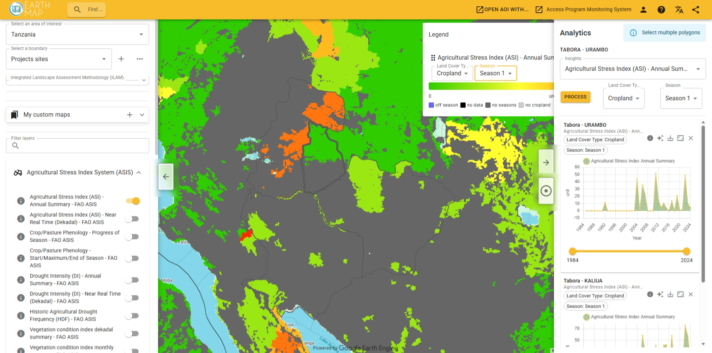

Framework brief — drought & early warning
DSL-IP · Integrated Landscape Assessment Methodology
Released within EarthMap · dsl.earthmap.org · 17 June 2026
Drylands Sustainable Landscapes Impact Program · GEF-7 · World Day to Combat Desertification & Drought
Bringing GIEWS Earth Observation into ILAM
FAO's GIEWS Earth Observation drought indicators are now released within EarthMap, the open
point-and-click platform behind ILAM's satellite tier. The integration puts near-real-time agricultural drought
monitoring directly into the Integrated Landscape Assessment Methodology — so drought is read, interpreted and
planned for at the landscape level, not just observed after the fact.
What is being integrated
7
EO drought layers · ASI to precipitation anomaly
10-day
Dekadal updates · days after each period ends
1 km
Vegetation Health Index resolution
1984→
Four decades of globally comparable archive
GIEWS Earth Observation & the ASIS engine
The Global Information and Early Warning System (GIEWS) monitors crop and vegetation condition worldwide.
Its Agricultural Stress Index System (ASIS) — FAO's global agricultural drought monitor — flags cropland
and grassland with a high likelihood of water stress before damage is visible on the ground. Built on the
Vegetation Health Index (satellite greenness and land-surface temperature, 1 km, back to 1984) and
updated every dekad, it is a genuine near-real-time early-warning tool. ASIS is an FAO product recognised as a
Digital Public Good.
Where ground data is scarce or delayed, ASIS offers a timely, globally comparable picture of emerging
drought — the early signal that buys time for anticipatory action.
DSL-IP · GIEWS Earth Observation integration
Seven drought layers — read in a few clicks
The GIEWS EO indicators arrive in EarthMap (dsl.earthmap.org), the same free platform that powers ILAM's
satellite screening. Selecting the ILAM project sites, a user toggles ASIS on and reads per-district drought
statistics back to 1984 — no coding, no licence, no GIS install.

EarthMap · dsl.earthmap.org — Agricultural Stress Index over ILAM project sites, United Republic of Tanzania. The Analytics panel returns annual ASI summaries per district (1984–2024) on demand.
ILAM's value is integration: it connects what satellites see to why land changes and what to do about
it. GIEWS EO adds the missing temporal dimension — drought as it emerges — and routes it through ILAM's three scales.
Detect · near-real-time
Read emerging drought
ASIS flags water stress within days of each dekad ending. In EarthMap, ILAM teams screen it wall-to-wall against the same area of interest used for productivity and land-cover.
Interpret · landscape
Place it in the evidence base
Drought layers are overlaid with ILAM's land-use systems, degradation hotspots and field findings — separating transient dry spells from structural degradation and locating who is exposed.
Act · planning
Plan & anticipate
Drought becomes a standing variable in landscape and land-use planning — prioritising interventions, triggering anticipatory action, and informing progress toward Land Degradation Neutrality.
Why this matters for Dryland Sustainable Landscapes Impact Programme (DSL-IP)
The drylands the Programme works in are defined by drought, yet ground data there is often scarce or delayed.
Folding GIEWS EO into ILAM means every landscape assessment can carry a current, globally comparable drought
reading — strengthening the case for intervention, sharpening targeting, and embedding drought into the
evidence that guides avoiding, reducing and reversing land degradation.
Four things the integration changes
01 Drought becomes near-real-time
ILAM's satellite tier gains a dekadal pulse — emerging water stress is visible days after it begins, not seasons later in a retrospective report.
02 Drought enters land-use planning
A drought signal is no longer a standalone alert; it is read inside the landscape evidence base and feeds directly into prioritisation and planning decisions.
03 Coverage where ground data is thin
Globally comparable, 1 km layers fill the gaps in drylands where field monitoring is sparse — a consistent picture across every DSL-IP country.
04 Open, free & standards-aligned
Delivered through EarthMap as a Digital Public Good — no licences, no coding, and interoperable with ILAM's reporting toward LDN and the Rio Conventions.
In one line
Drought, made part of how the landscape is read — and planned
"FAO did not build a new drought system for the drylands. GIEWS Earth Observation already exists,
is proven and globally comparable, and now lives inside EarthMap — so ILAM can fold near-real-time drought into
the evidence base that guides land-use planning and management across DSL-IP."
Anchor it to World Day to Combat Desertification & Drought (17 June).
Lead with anticipatory action — early signal buys time before crisis.
Frame drought as an ILAM Module 1 layer, not a separate tool.
Stress open access: EarthMap, point-and-click, a Digital Public Good.
Connect it to Land Degradation Neutrality and evidence-based planning.